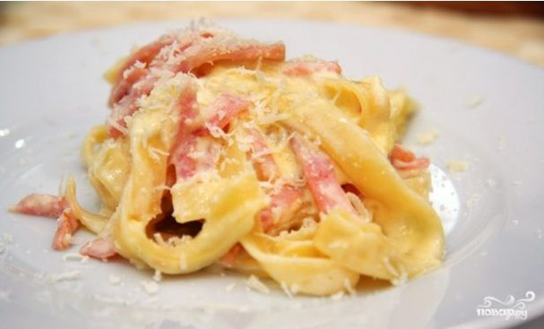

Паста Альфредо

Ингредиенты (2 порции):
Паста - 200 гр
Ветчина - 100 гр
Сливки 10% - 200 гр
Сыр пармезан - 50 гр
Яичные желтки - 3 шт
Специи - по вкусу
Чеснок - 2 зубчика
Приготовление:
1. Отвариваем пасту до состояния аль-денте, а на сковороде в это время разогреваем растительное масло (лучше оливковое). Обжарим в нем измельченный чеснок и ветчину.
2. Пасту отцедим и промоем под холодной водой. Смешаем со смесью со сковороды. Сливки взбиваем с желтками, тертым сыром и специями по вкусу. Заливаем блюдо этой смесью ставим на плиту, где тушим на маленьком огне, пока сливочный соус не закипит и не загустеет.
3. Вот и все! Подавайте сразу же, посыпав тертым сыром.